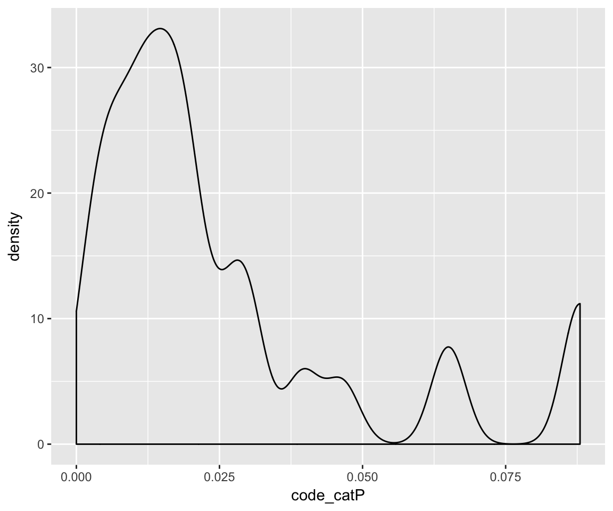
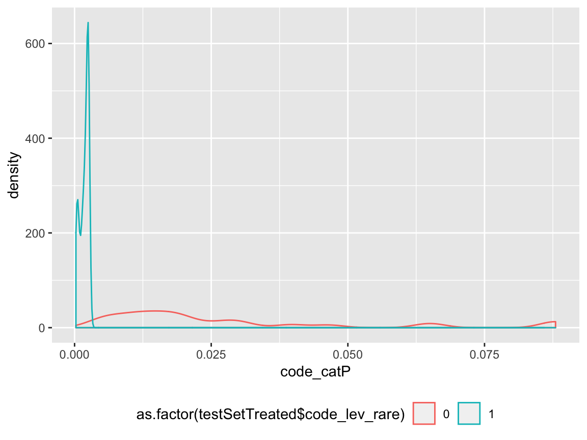
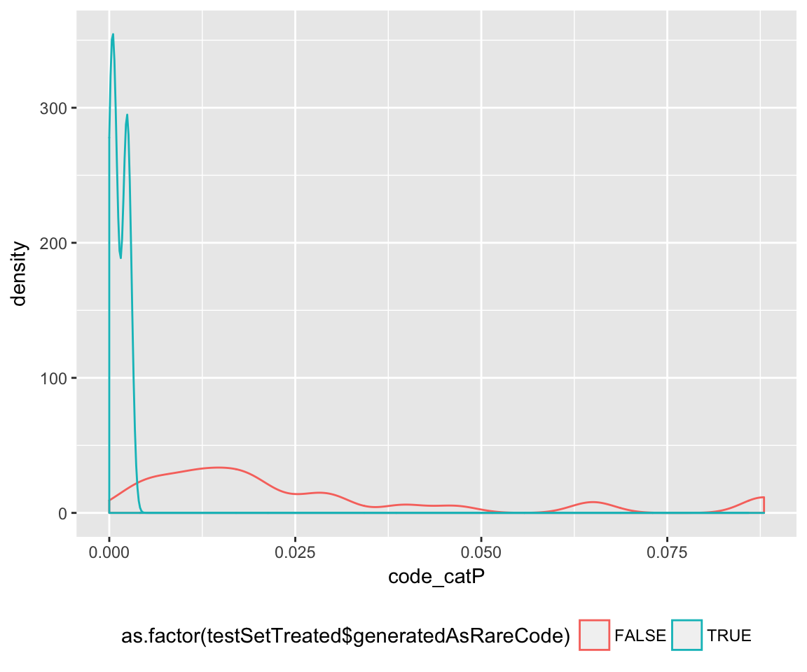

For some categorical variables rarity can reflect structural features. For instance with United States Zip codes rare zip codes often represent low population density regions.
When this is the case it can make sense to pool the rare levels into a new re-coded level called ``rare.’’ If this new level is statistically significant it can be a usable modeling feature. This sort of pooling is only potentially useful if below a given training count behave similarly.
This capability was more of an experimental demonstration of possible extensions of vtreat to have more inference capabilities about rare level than a commonly useful feature. Most of this power has since been captured in the more useful catP feature (also demonstrated here). Even more power is found in using an interaction of catN or catB with catP.
An example of the rare level feature using vtreat is given below.
First we set up some data by defining a set of population centers (populationFrame) and code to observe individuals (with replacement) uniformly from the combined population with a rare condition (inClass) that has elevated occurrence in observations coming from the small population centers (rareCodes).
library('vtreat')
library('ggplot2')
set.seed(2325)
populationFrame <- data.frame(
popsize = round(rlnorm(100,meanlog=log(4000),sdlog=1)),
stringsAsFactors = FALSE)
populationFrame$code <- paste0('z',formatC(sample.int(100000,
size=nrow(populationFrame),
replace=FALSE),width=5,flag='0'))
rareCodes <- populationFrame$code[populationFrame$popsize<1000]
# Draw individuals from code-regions proportional to size of code region
# (or uniformly over all individuals labeled by code region).
# Also add the outcome which has altered conditional probability for rareCodes.
drawIndividualsAndReturnCodes <- function(n) {
ords <- sort(sample.int(sum(populationFrame$popsize),size=n,replace=TRUE))
cs <- cumsum(populationFrame$popsize)
indexes <- findInterval(ords,cs)+1
indexes <- indexes[sample.int(n,size=n,replace=FALSE)]
samp <- data.frame(code=populationFrame$code[indexes],
stringsAsFactors = FALSE)
samp$inClass <- runif(n) < ifelse(samp$code %in% rareCodes,0.3,0.01)
samp
}We then draw a sample we want to make some observations on.
testSet <- drawIndividualsAndReturnCodes(2000)
table(generatedAsRare=testSet$code %in% rareCodes,inClass=testSet$inClass)## inClass
## generatedAsRare FALSE TRUE
## FALSE 1962 15
## TRUE 16 7Notice that in the sample we can observe the elevated rate of inClass==TRUE conditioned on coming from a code that is one of the rareCodes.
We could try to learn this relation using vtreat. To do this we set up another sample (designSet) to work on, so we are not inferring from testSet (where we will evaluate results).
designSet <- drawIndividualsAndReturnCodes(2000)
treatments <- vtreat::designTreatmentsC(designSet,'code','inClass',TRUE,
rareCount=5,rareSig=NULL,
verbose=FALSE)
treatments$scoreFrame[,c('varName','sig'),drop=FALSE]## varName sig
## 1 code_lev_rare 1.050358e-07
## 2 code_lev_x.z03696 2.012044e-01
## 3 code_lev_x.z12247 9.121218e-01
## 4 code_lev_x.z13241 7.190457e-01
## 5 code_lev_x.z16423 1.758354e-01
## 6 code_lev_x.z24466 3.885375e-01
## 7 code_lev_x.z31626 2.535686e-01
## 8 code_lev_x.z32809 1.574373e-01
## 9 code_lev_x.z36679 4.806414e-01
## 10 code_lev_x.z40704 2.419125e-01
## 11 code_lev_x.z41783 1.574373e-01
## 12 code_lev_x.z88424 5.330852e-01
## 13 code_lev_x.z92143 6.615697e-01
## 14 code_catP 2.946894e-01
## 15 code_catB 1.592276e-02We see in treatments$scoreFrame we have a level called code_lev_rare, which is where a number of rare levels are re-coding. We can also confirm levels that occur rareCount or fewer times are eligable to code to to code_lev_rare.
designSetTreated <- vtreat::prepare(treatments,designSet,pruneSig=0.5)
designSetTreated$code <- designSet$code
summary(as.numeric(table(designSetTreated$code[designSetTreated$code_lev_rare==1])))## Min. 1st Qu. Median Mean 3rd Qu. Max.
## 1.000 2.000 3.000 3.161 5.000 5.000summary(as.numeric(table(designSetTreated$code[designSetTreated$code_lev_rare!=1])))## Min. 1st Qu. Median Mean 3rd Qu. Max.
## 6.00 11.50 21.00 28.39 33.50 176.00We can now apply this treatment to testSet to see how this inferred rare level performs. Notice also the code_catP which directly encodes prevalence or frequency of the level during training also gives usable estimate of size (likely a more useful one then the rare-level code itself).
As we can see below the code_lev_rare correlates with the condition, and usefully re-codes novel levels (levels in testSet that were not seen in designSet) to rare.
testSetTreated <- vtreat::prepare(treatments,testSet,pruneSig=0.5)
testSetTreated$code <- testSet$code
testSetTreated$newCode <- !(testSetTreated$code %in% unique(designSet$code))
testSetTreated$generatedAsRareCode <- testSetTreated$code %in% rareCodes
# Show code_lev_rare==1 corresponds to a subset of rows with elevated inClass==TRUE rate.
table(code_lev_rare=testSetTreated$code_lev_rare,
inClass=testSetTreated$inClass)## inClass
## code_lev_rare FALSE TRUE
## 0 1873 15
## 1 105 7# Show newCodes get coded with code_level_rare==1.
table(newCode=testSetTreated$newCode,code_lev_rare=testSetTreated$code_lev_rare)## code_lev_rare
## newCode 0 1
## FALSE 1888 108
## TRUE 0 4# Show newCodes tend to come from defined rareCodes.
table(newCode=testSetTreated$newCode,
generatedAsRare=testSetTreated$generatedAsRareCode)## generatedAsRare
## newCode FALSE TRUE
## FALSE 1977 19
## TRUE 0 4# Show code_catP's behavior on rare and novel levels.
summary(testSetTreated$code_catP)## Min. 1st Qu. Median Mean 3rd Qu. Max.
## 0.00000 0.01000 0.01700 0.02599 0.03050 0.08800ggplot(data=testSetTreated,aes(x=code_catP)) + geom_density()
summary(testSetTreated$code_catP[testSetTreated$code_lev_rare==1])## Min. 1st Qu. Median Mean 3rd Qu. Max.
## 0.000000 0.001000 0.002000 0.001754 0.002500 0.002500ggplot(data=testSetTreated,aes(x=code_catP,color=as.factor(testSetTreated$code_lev_rare))) +
geom_density() + theme(legend.position="bottom")
summary(testSetTreated$code_catP[testSetTreated$newCode])## Min. 1st Qu. Median Mean 3rd Qu. Max.
## 0 0 0 0 0 0summary(testSetTreated$code_catP[testSetTreated$generatedAsRareCode])## Min. 1st Qu. Median Mean 3rd Qu. Max.
## 0.000000 0.000500 0.001000 0.001304 0.002500 0.003000ggplot(data=testSetTreated,aes(x=code_catP,color=as.factor(testSetTreated$generatedAsRareCode))) +
geom_density() + theme(legend.position="bottom")